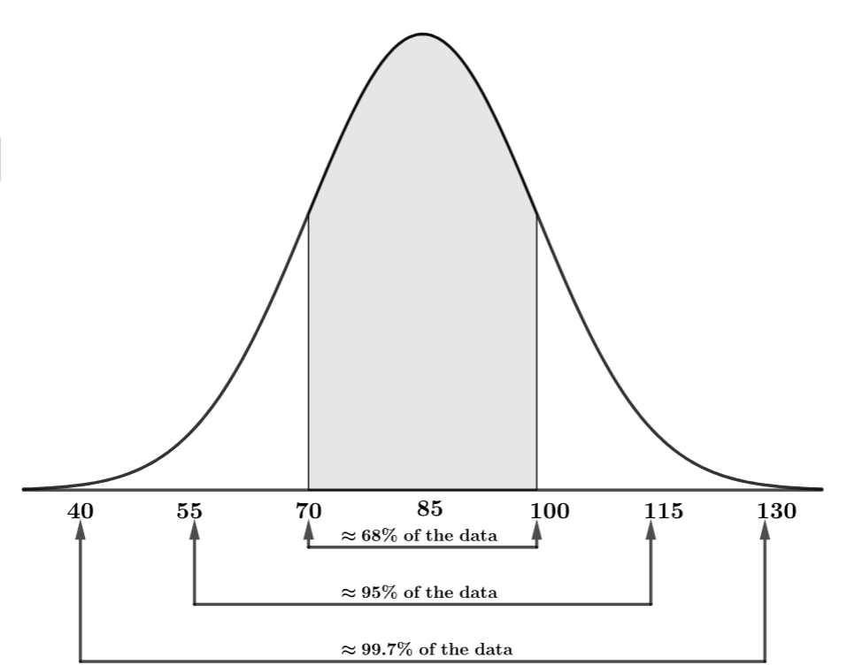
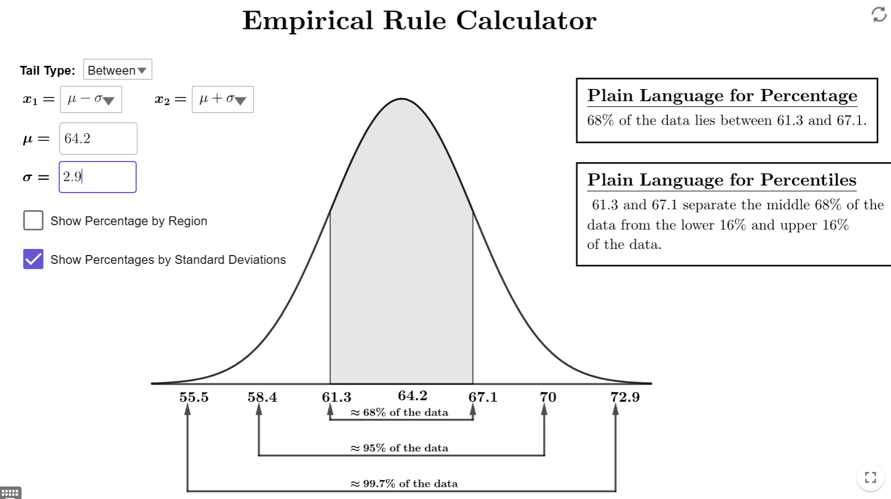
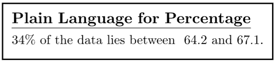
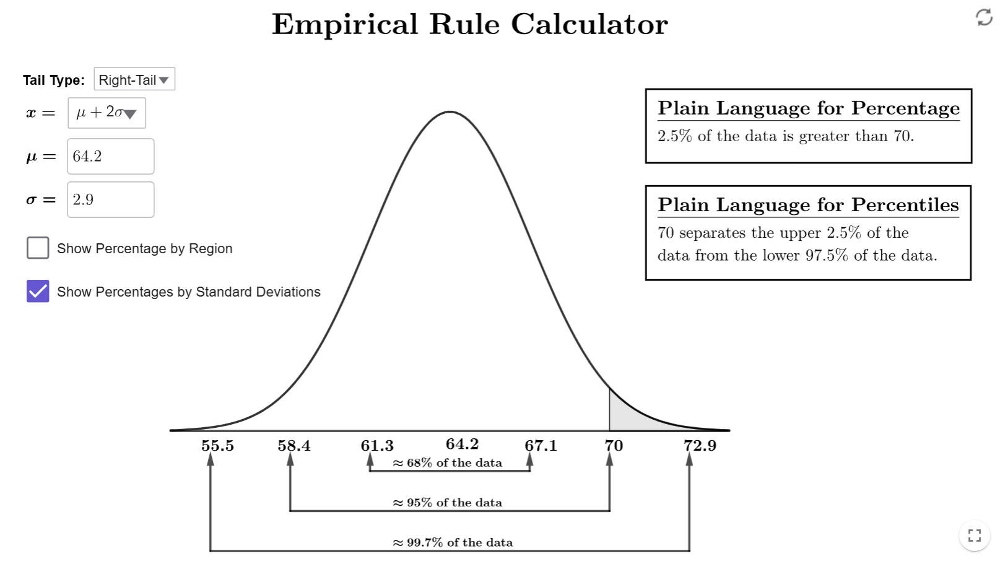
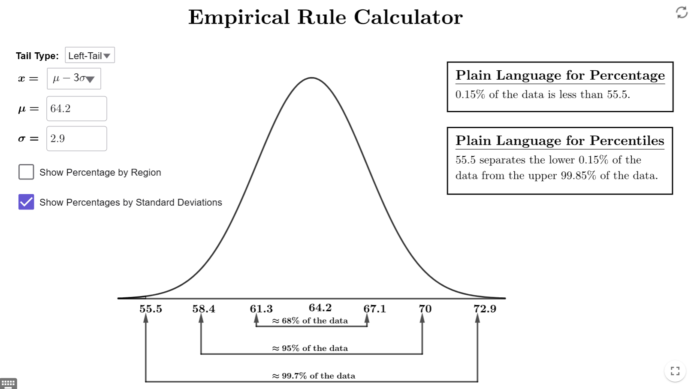

What is the Empirical Rule?
The Empirical Rule provides a simple way to understand the distribution of data in normal distributions. It states that for approximately normal data sets, the percentage of values within one, two, or three standard deviations of the mean follows predictable patterns.
The Empirical Rule
What is the Empirical Rule?
Let \(\mu\) and \(\sigma\) be the mean and standard deviation for a population that is normally distributed. Then the data of the normal distribution followings the following guidelines.
- Approximately 68% of the data is within one standard deviation of the mean. In other words, 68% of the data is between \(\mu-\sigma\) and \(\mu+\sigma\).
- Approximately 95% of the data is within two standard deviations of the mean. In other words, 95% of the data is between \(\mu-2\cdot \sigma\) and \(\mu+2\cdot \sigma\).
- Approximately 99.7% of the data is within three standard deviations of the mean. In other words, 99.70% of the data is between \(\mu-3\cdot\sigma\) and \(\mu+3\cdot\sigma\).
Notes
- When we draw a normal distribution with a known mean and standard deviation, we
often label the \(x\)-axis with the values of \(\mu\), \(\mu\pm\sigma\), \(\mu\pm
2\cdot\sigma\), and \(\mu\pm 3\cdot\sigma\). For example, if \(\mu=85\) and
\(\sigma=15\), our normal distribution looks like this:

Traditionally, the empirical rule required you to add an subtract areas in certain ways. Thankfully, with modern technology, we can focus on the most important aspect of the Empirical Rule: the relationship between relative frequency (percentage of data) and a range of values from a normal distribution.
Example 1
In a national survey, a sample of women aged 20 to 29 in the United States had a mean height of 64.2 inches and a standard deviation of 2.9 inches. Use the Empirical Rule Calculator to answer the following questions.
- Part A: Based on this sample, what percentage of women aged 20 to 29 would you expect to be between 64.2 and 67.1 inches tall?
- Part B: Based on this sample, what percentage of women aged 20 to 29 would you expect to be taller than 70 inches?
- Part C: Based on this sample, what percentage of women aged 20 to 29 would you expect to be shorter than 55.5 inches?
Solution
- Part A:
Open up the Empirical Rule Calculator, and make sure we have the tail type set to Between since we want the percentage between two numbers. Set \(\mu\) to 64.2 and \(\sigma\) to 2.9. You will get the following image.

Notice that 64.2 is the peak, so \(\mu=64.2\). Since 67.1 is one number to the right of 64.2, it is one standard deviation above the mean; so, \(\mu+\sigma=67.1\). Therefore, we set \(x_1=\mu\) (since 64.2 is the smaller number) and \(x_2=x+\sigma\) (since 67.1 is the larger number). The box in the upper right corner gives use the percentage:

Therefore, 34% of the women are between 64.2 and 67.1 inches tall. - Part B:
Since we want the percentage greater than a number, we will change the tail-type to right-tail. Make sure to change the \(\mu\) and \(\sigma\) to the correct values since, when you change tail type, they will default back to 0 and 1, respectively Since 70 is two numbers to the right of the peak, it is two standard deviations above the mean. Therefore, \(\mu+2\sigma=70\). This means we need to set \(x=\mu+2\sigma\). If you have done everything correctly, you should get the following output.

Therefore, 2.5% of women in the sample are taller than 70 inches. - Part C
Since we want the percentage less than a number, we will change the tail-type to left-tail. Make sure to change the \(\mu\) and \(\sigma\) to the correct values since, when you change tail type, they will default back to 0 and 1, respectively Since 55.5 is three numbers to the left of the peak, it is three standard deviations below the mean. Therefore, \(\mu-3sigma=55.5\). This means we need to set \(x=\mu-3\sigma\). If you have done everything correctly, you should get the following output.

Therefore, 0.15% of women in the sample are shorter than 55.5 inches.
$$\tag*{\(\blacksquare\)}$$
Conclusion
The Empirical Rule is a powerful tool for understanding how data is distributed in a normal distribution. By knowing the mean and standard deviation, you can estimate the percentage of values within a range. This helps in identifying what is typical and what may be unusual in a dataset.